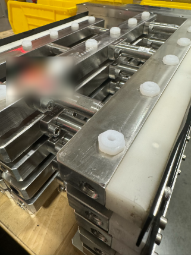
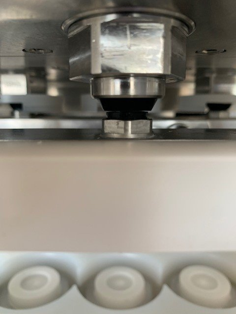
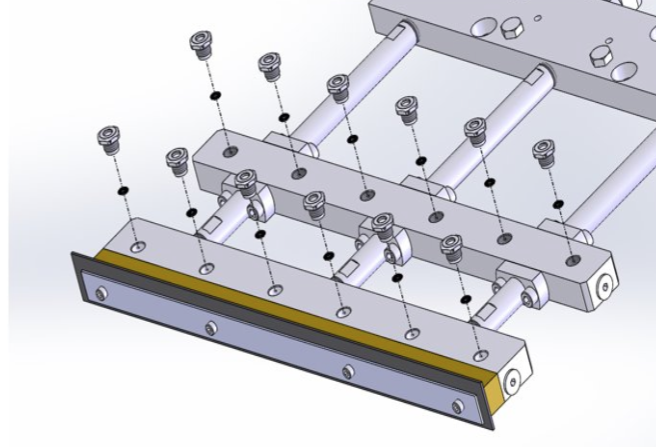
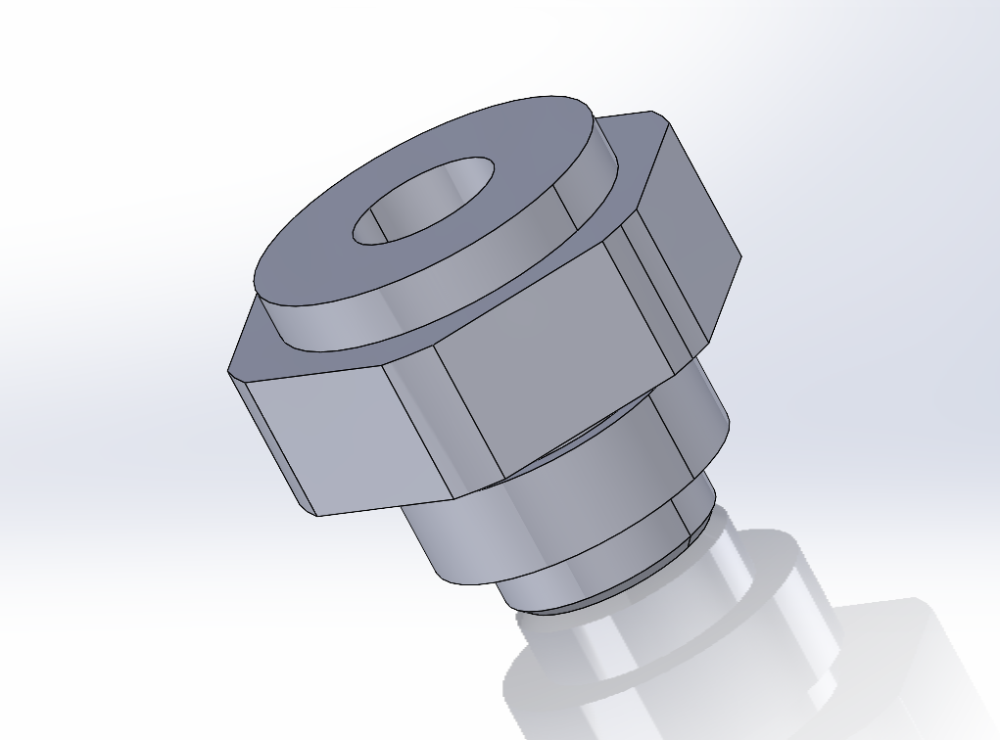

Case Study 03 · Component Design
Flushing Grommet Redesign
Material selection & design-for-manufacture iteration

Problem
A sealing component used in an automated cleaning sequence was a two-piece assembly (a rigid insert plus a separate molded seal). The molded seal repeatedly popped free during cleaning cycles, causing chemical leaks that created a direct quality risk, while also driving high spare-parts consumption.

My Role & Constraints
I owned the redesign of this component, from root-cause diagnosis through material selection and final part design.
Approach & Key Decisions
- Diagnosed two compounding failure modes: the seal physically dislodging during cleaning, and the seal material deforming/wearing out after about a month of service life.
- Selected a chemically-resistant polyurethane as a single-material solution — compatible with the process chemical, inexpensive, easily machinable, and able to seal effectively against the mating surface without damaging it.
- Redesigned the part from a 2-piece assembly into a single-piece machined component, eliminating the failure mode where the seal could separate from its housing entirely.


Outcome
Eliminated a recurring quality and safety risk and the associated equipment downtime.
~$10K/yrSpare-parts cost saved
~4%Equipment capacity improvement
4×PM interval extended (monthly → quarterly)
Skills Demonstrated
Root-Cause Analysis
Material Selection
Design-for-Manufacture
Cost Reduction
Quality / Reliability Engineering